Homophily and attributes analysis
Introduction
<<<<<<< HEADOne purpose of this project was to focus on the analysis of how much the similarity of two actors influences the likeliness of playing the same movie. For this, we assess similarily by using the homophily measure (Newman 2003), intuitively understood as the tendency for people to be attracted to those similar to themselves.
Knowing that we are working on a dataset of actor who are linked between each other through movies, we decided to consider only actors with a minimum degree of fifteen. This threshold is based on results from the full actor network analysis, where we saw that the power law regime of the degree distribution starts around \(k \gtrsim 15\). Another justification for this is that due to their low connectivity, low degree vertices do not carry much information about homophily.
In our dataset, each actor is associated with a number of attributes. We begin our analysis by quantifying the global distribution of each attribute.
=======One purpose of this project was to focus on the analysis of how connected actors could be influenced to play in the same movie based on their distinguished attributes. In other words, does “similar” actors are more likely connected into same movies. We need therefore a definition of the similarity. According to several papers, one main tool to assess the similarity is called the homophily. It is the tendency for people to be attracted to those who seems similar to themselves.
Knowing that we are working on a dataset of actor who are linked between each other through movies, we decided to consider only actors with a minimum degree of fifteen (which is quiet representative to movies in general as the movie story is based on interaction between a quiet large number of characters). Moreover, we also took our decision because low degree vertices shall add some unmeaningful values, particularly for categorical attribute (which can even become binary for very low link degree).
First of all, we know that we will based our study on the attributes of each actors of the dataset. Then, as a data scientist, we need to begin our analysis by quantify each attributes among the different actors and observe the repartition over the dataset.
>>>>>>> 33a5844 (added conclusion)- For the actor nationality, we have the following interactive plot Figure 1. We observe a majority (around 45%) of american actors, followed by some country like Canada, India, Great britain, … We need to keep this distribution in mind for the rest of our study, especially for the comparison part.
Other attribute’s distribution are plotted in Figure 2, Figure 3, Figure 4.
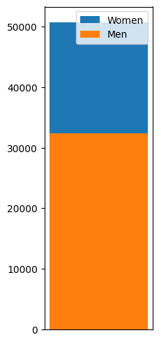
- Furthermore, we need to be attentive for the other attributes distribution. We highlight them according to the dataset as following :
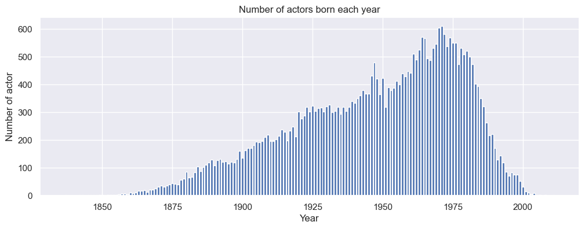
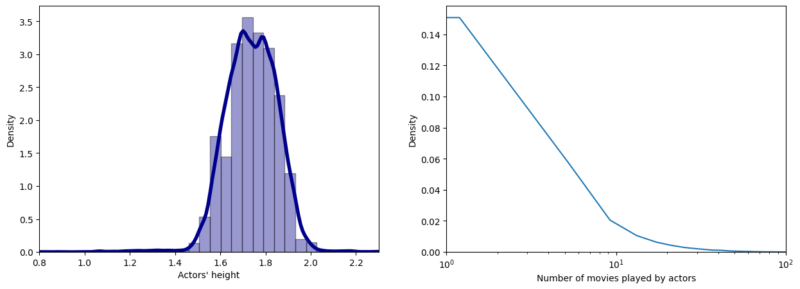
Some of these distributions are likely to be gaussian (height) or even a power law distribution for the number of movies played. We can mention that the gender attribute is unbalanced in our dataset and need to be also taken with caution for further interpretations.
Homophily Score
We will now pay attention to quantify the homophily score of each actor : - For categorical attribute, it can be describe as follow : \[\text{Homophily}_{i} = \frac{1}{k_i} \sum \limits _j \delta_{ij} \] with \(\delta_{ij}\) = 1 if same attribute, else -1 and \(k_i\) is the degree of the node \(i\)
Therefore, we can calculate the homophily score of each actor. As interpretation, if its value tends to be close to 1, the concerned actor is more likely to play with similar actor. On the other hand, if its value becomes close to -1, it is the opposite case and the actor tends to play with dissimilar actors. (Golub and Jackson 2012)
Pay attention to the fact that we don’t take into account multiple edges between the same two actors (even though actors played several times with another one, we still consider it as one edge).
=======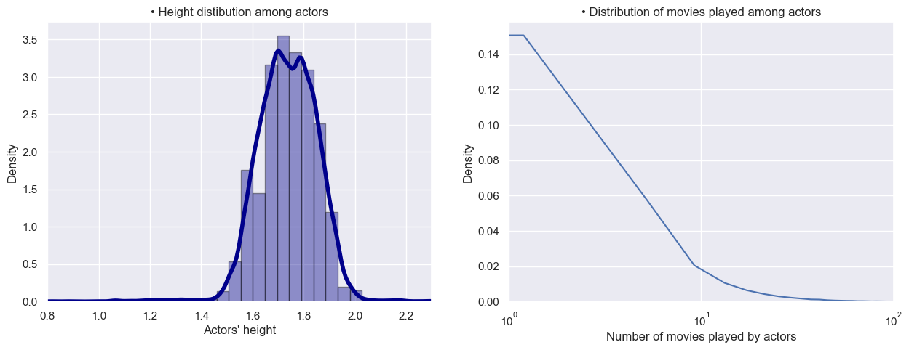
Some of these distributions are likely to be gaussian (height) or even a power low distribution for the number of movies played. We can mention that the gender attribute is unbalanced in our dataset and need to be also taken with caution for further interpretations.
We will now pay attention to quantify the homophily score of each actor : - For categorical attribute, it can be describe as follow : \[Homophily_{i} = \frac{\sum \limits _j \delta_{ij}}{k_i} \] with \(\delta_{ij}\) = 1 if same attribute, else -1 and $ k_i $ is the degree of the node \(i\)
Therefore, we can calculte the homophily score of each actor. As interpretation, if its value tends to be close to 1, the concerned actor is more likely to play with similar actor. On the other hand, if its value becomes close to -1, it is the opposite case and the actor tends to play with dissimilar actors. (Golub and Jackson 2012)
Pay attention to the fact that we don’t take into account multiple same edges (even though actors played several times with another one, we still consider it as one edge).
>>>>>>> 33a5844 (added conclusion)- For scalar attribute, we can create a linear equation, meaning that the further the values are apart, the lower the value will be. We illustrated this defintion through the following plot :
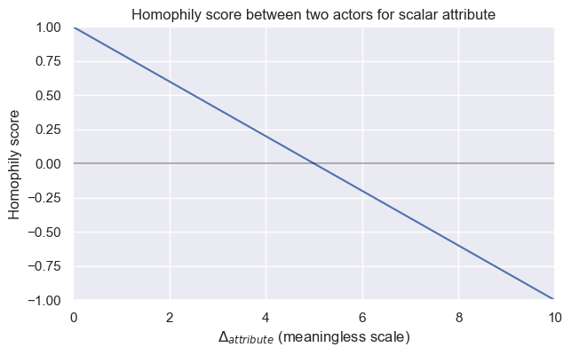
The value for which we consider the homophily score to -1 depends on the standard deviation of the distribution (we target to aim the 95% threshold). \[ \Delta_{max} = 2 \times \sigma \]
- We then compute these homophily scores for each actors in order to vizualise the distribution. We end up with the following distributions according to the different attributes. The four first distributions are the categorical attributes especially with the distribution if the take only the homophily score of men actors (gender men) compared to the case where we take only the homophily score of women actress (gender women). The three next distributions are dedicated to the scalar attributes :
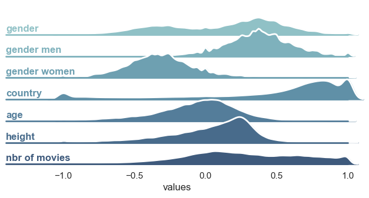
The results are showing some underlying piece of information. Indeed, we see firstly that total gender homophily is mainly driven by two distinguished distributions : the distribution of gender homophily for men and women. Knowing that the dataset contains more men than women, it explains partially that women’s homophily has the tendency to be negative in comparison to men’s homophily (the “probability” to have a women-men edge is higher than women-women). Moreover, we see that country attribute leads to quite high values of homophily (One first supposition we can make is that movies are more likely to gather actors from the same country, i.e. cluster of countries). Age and height attributes seem quite distributed around the zero (slightly shifted to positive values, thus perhaps a small underliying similarity). Finally, the number of movies played doesn’t lead to a direct conclusion as we have a quite flat distribution (we can mention that they are mainly positive values)
Comparison part
The raw distribution we gathered above could be not relevant and could lead to wrong interpretation because the dataset is not equally balanced among all attributes (for example the gender distribution). Therefore, if we want to make better observations, we need to compare it with what we expected to see for random edges between actors. We worked on two different possibility for the comparison that we will present to you below.
Comparison with “mean actor” of the dataset
<<<<<<< HEADThe first idea is to think about probabilities. For categorical attributes, we can calculate the probability for an actor to randomly be assigned to this attribute knowing the initial distribution over the dataset. Therefore, we decided to create a “mean actor” which is the hypothetical actor that we could get randomly. Each actor of the dataset will be linked to this mean actor and their associated homophily score shall be detailled as followed : \[ \text{Homophily}_{i} = p_{attribute} - (1- p_{attribute}) \] with $ p_{attribute} $ being the probability that “mean actor” have the same attribute as the actor \(i\).
=======The first idea is to think about probabilities. For categorical attributes, we can calculate the probability for an actor to randomly be assigned to this attribute knowing the initial distribution over the dataset. Therefore, we decided to create a “mean actor” which is the hypothetical actor that we could get randomly. Each actor of the dataset will be linked to this mean actor and their associated homophily score shall be detailled as followed : \[ Homophily_{i} = p_{attribute} - (1- p_{attribute}) \] with $ p_{attribute} $ being the probability that “mean actor” have the same attribute as the actor \(i\).
>>>>>>> 33a5844 (added conclusion)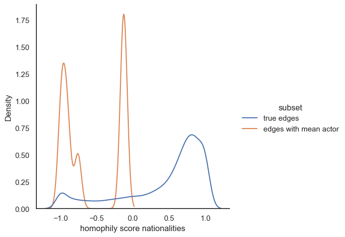
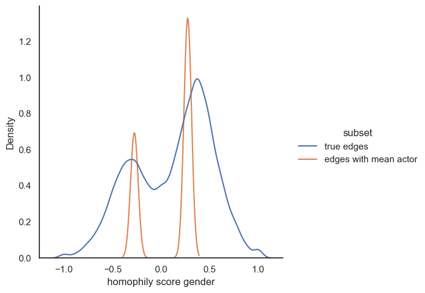
As first comparison observation, nationaties seems to be an attribute relevant for similarity in actor connections. On the other hand, we can’t get much information from gender comparison except that homophily score for men is slightly higher than the random case and oppositely women actress tends to have lower homophily score in the true dataset compared to the “mean” case.
Edges randomization for comparison
The second option for comparison is the randomize the edges (La Fond and Neville 2010). We keep the degree of each actor, but instead of their true links, each edge will be repaced by an edge with a random actor in the dataset. With that, we can once again compute their homophily score. The advantage here is that we obtain a distribution that could be compared to the raw distributions we obtained earlier (and we can also perfom it on scalar attribute comapared to the “mean actor”)
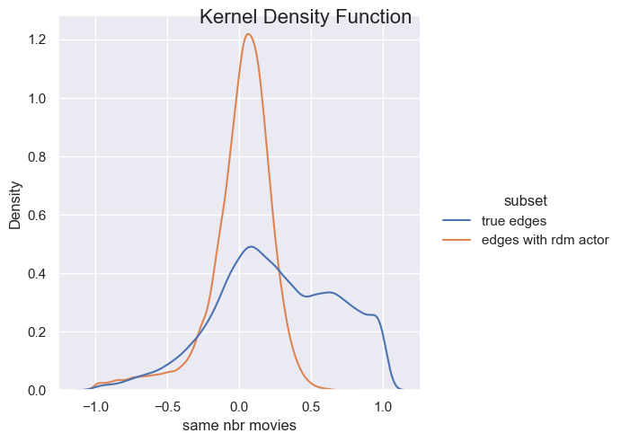
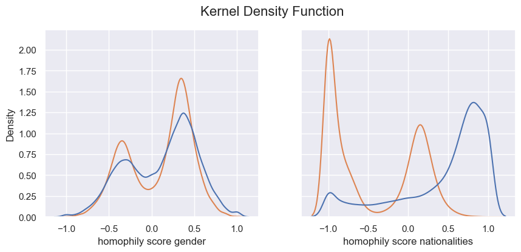
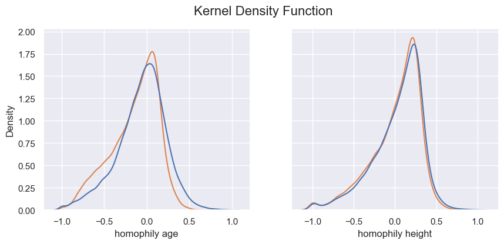
- p_value for the mann_whitney_u_test on the distributions :
| attribute | p-values | |
|---|---|---|
| 0 | number of movies | 2.461082e-31 |
| 1 | gender | 0.000000e+00 |
| 2 | nationalities | 1.803844e-255 |
| 3 | age | 3.805015e-09 |
| 4 | height | 0.000000e+00 |
Based on the results illustrated above, we can make different conclusions. Firstly, we obtained more or less the same interpretation for the categorical attributes. It seems like actors from a certain country are more quite likely to play together (we can think about cinemar studios as hollywood, bollyhood, …). Moreover, the age of the actor looks like this is not a relevant attribute to link actor in movies. The only observation we can made is that the true edges are slightly shifted to the left meaning that is decrease the total homophily of the network compared to the random edges. Furthermore, even though gender initialy seems to be significant for similarity, it appears that on our dataset, it is not a relevant attribute that connect more actor (We can think about a certain diversity of gender in the movies. Maybe in a further analysis, we could have a look on how this homophily evolve depending on the movie’s genre). Finally, height is not a significant attribute to connect people as we can see in the plot above, especially because we obtain the same distribution either with random edges and the true edges.
=======Based on the results illustrated above, we can make different conclusions. Firstly, we obtained more or less the same interpretation for the categorical attributes. It seems like actors from a certain country are more quite likely to play together (we can think about cinemar studios as hollywood, bollyhood, …). Moreover, the age of the actor looks like this is not a relevant attribute to link actor in movies. The only observation we can made is that the true edges are slightly shifted to the left meaning that is decrease the total homophily of the network compared to the random edges. Furthermore, even though gender initialy seems to be significant for similarity, it appears that on our dataset, it is not a relevant attribute that connect more actor (We can think about a certain diversity of gender in the movies. Maybe in a further analysis, we could have a look on how this homophily evolve depending on the movie’s genre). Finaly, height is not a significant attribute to connect people as we can see in the plot above, especially because we obtain the same distribution either with random edges and the true edges.
# NetworkX Research, not relevant for the web story
#| echo: false
import networkx as nxReferences
Golub, Benjamin, and Matthew O Jackson. 2012. “Network Structure and the Speed of Learning Measuring Homophily Based on Its Consequences.” Annals of Economics and Statistics/ANNALES D’ÉCONOMIE ET DE STATISTIQUE, 33–48.
La Fond, Timothy, and Jennifer Neville. 2010. “Randomization Tests for Distinguishing Social Influence and Homophily Effects.” In Proceedings of the 19th International Conference on World Wide Web, 601–10. WWW ’10. New York, NY, USA: Association for Computing Machinery. https://doi.org/10.1145/1772690.1772752.
<<<<<<< HEAD
Newman, M. E. J. 2003. “Mixing Patterns in Networks.” Physical Review E 67 (2). https://doi.org/10.1103/physreve.67.026126.
=======
>>>>>>> 33a5844 (added conclusion)